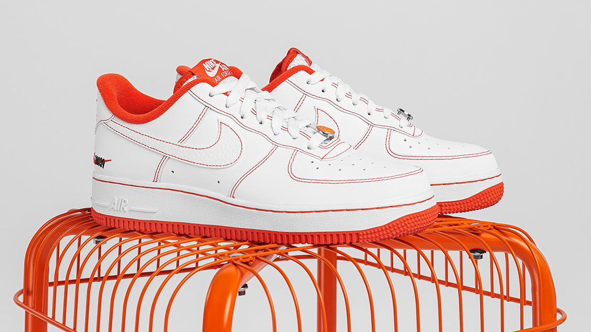
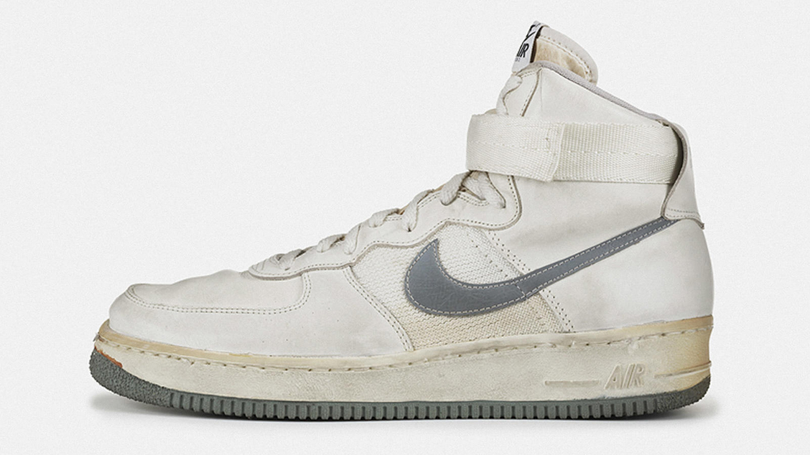
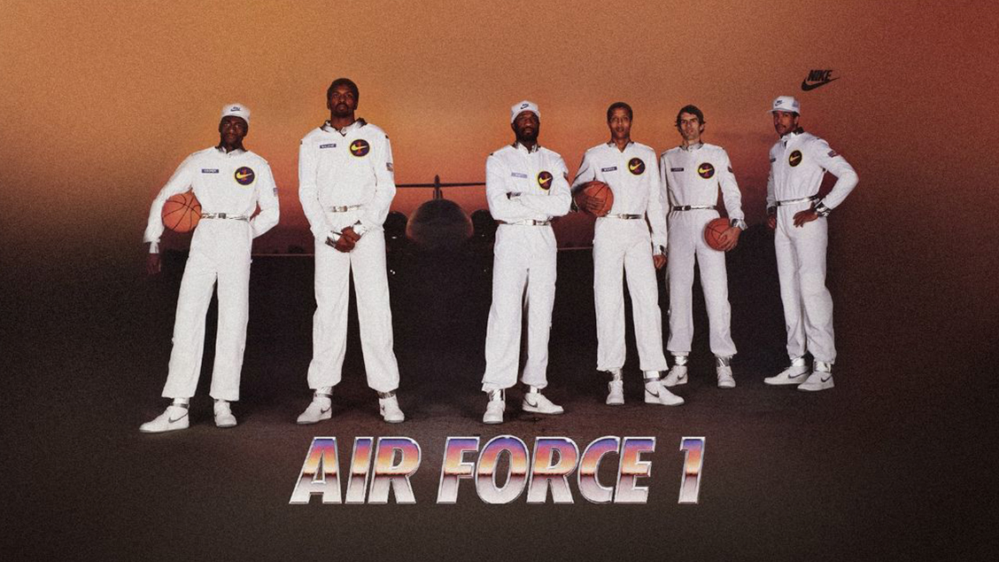

История кроссовок Adidas Nike, которые были созданы для баскетбольных площадок, чтобы стать культурным феноменом на улицах

Кроссовки Nike Air Force 1, пожалуй, самая известная модель орегонского бренда за всю его историю.
Изначально
они были созданы для баскетбола и стали первой обувью на площадке с технологией амортизации Air.
С момента своего дебюта в 1982 году кроссовки превратились из спортивной классики в уличную легенду,
нашли
признание в хип-хопе и стали самостоятельным культурным явлением. Как ни странно, модель практически
не
изменилась за все эти годы, но благодаря коллаборациям и юбилейным выпускам получила новые дизайны.
Путь к цели
В 1979 году вышли беговые кроссовки Nike Tailwind — первая обувь, оснащенная технологией Air,
разработанной
авиационно-космическим инженером Фрэнком Руди. Спустя два года бренд решил внедрить
амортизацию в
баскетбольные
модели. В то время Nike был новичком в этом виде спорта, так как с 1964 года
специализировался
исключительно на
беговой обуви. Компанию, которая изначально называлась Blue Ribbon Sports,
основали два человека,
посвятивших
жизнь легкой атлетике. Ими были студент Орегонского университета Фил Найт
и его тренер Билл Бауэрман.
Брюс Килгор — дизайнер силуэта Air Force 1
В начале 1980-х годов бренд обратился к Брюсу Килгору, который уже отличился созданием
шипованных
кроссовок
Nike Zoom. Он должен был доработать прототип баскетбольной обуви, созданный предыдущим
дизайнером.
Однако
Килгор понял, что для создания новой модели нужно полностью изменить подход и учитывать
потребности
игроков в
баскетбол. Вдохновившись походными ботинками Nike Approach, он снабдил кроссовки высоким
скошенным
верхом,
чтобы обеспечить поддержку лодыжки и гибкость обуви. Дополнительным преимуществом стало
наличие
ремешка,
фиксирующего ногу.
Для подошвы дизайнер хотел чего-то совершенно нового. Взамен привычной в то время тонкой
резины
он
предложил
конструкцию «cupsole». Она была изготовлена из цельного куска резины и имела форму, похожую
на чашу,
из-за
чего
и получила свое название — «cup» — чаша и «sole» — подошва. Кроме того, Брюс изменил узор
пометки с
«елочки» на
круговой рельеф. Эта деталь должна была повлиять на лучшее сцепление обуви с поверхностью
во время
поворотов
баскетболистов на площадке.
Когда Килгор получил первые прототипы AF1 из лаборатории Nike, он загрузил их в свою
машину и
отправился к
тестировщикам. Одним из тех счастливчиков, кто опробовал кроссовки в штаб-квартире бренда,
был Тинкер
Хэтфилд.
Без них он, вполне возможно, не стал бы тем самым специалистом, создавшим целую линию
Air Max, многие
дизайны
Air Jordan и другие культовые модели. Хэтфилд присоединился к Nike в 1981 году в качестве
архитектора.
Он
взял
пару Air Force 1, играя в баскетбол, и был настолько впечатлен производительностью обуви,
что сменил
профессию,
всерьез заинтересовавшись дизайном.

Оригинальная модель Air Force 1 1982 года
Одной из особенностей модели, которая была удалена из первоначального прототипа, являлся
стальной
стержень
в
стельке. Именно он вдохновил Тинкера на создание культовой пластины из углеродного волокна
в кроссовках
Air
Jordan XI 1995 года. Технология было предшественником инновации, обеспечивающей возврат энергии
при
каждом
шаге, которая сейчас есть практически во всех кроссовках с высокими характеристиками производительности.
Культ Air Force 1
В 1982 году кроссовки Nike Air Force 1 дебютировали с рекламным слоганом «Air in a box» —
«Воздух в
коробке».
Нейтральная бело-серая палитра была одной из немногих расцветок обуви, за которой неизбежно
последовали
более
смелые решения. Следующим этапом стало привлечение именитых баскетболистов НБА — Мозеса Мэлоуна,
Майкла
Купера,
Бобби Джонса, Кэлвина Нэтта, Майкла Томпсона и Джамала Уилкса. Фотография показала спортсменов
на
взлетно-посадочной полосе. Таким образом бренд сделал отсылку названия кроссовок к самолетам
с позывным
«Air
Force One», который используется ВВС США в случае, если на борту находится президент.

«Оригинальная шестерка» — именитые атлеты NBA ставшие лицом кампании AF1
Во время чемпионата НБА 1983 года Мозес Мэлоун, игравший в составе команды
«Филадельфия
Севенти
Сиксерс»,
надел
новые кроссовки и заявил, что сметет каждого соперника и выиграет титул.
Баскетболист сдержал свое
слово,
чем
обратил внимание поклонников на AF1. В результате модель стала обязательным
элементом образа на улицах
Филадельфии.
В том же году бренд представил заниженную версию силуэта, после чего владельцы
трех магазинов кроссовок
Балтимора встретились с Nike, чтобы обсудить возможность производства эксклюзивных
моделей AF1 «Color
of
the
Month». Смелый ход ознаменовал рождение коллабораций и лимитированных коллекций
на базе баскетбольной
обуви.
Однако спустя всего год она была снята с производства. Это кажется странным в
современном мире, но в то
время
прекращение выпуска обуви спустя пару лет после дебюта было обычным делом. Таким
образом освобождалось
место
для новинок.
AF1 в хип-хопе
Кроссовки стали первым силуэтом, получившим приставку «ретро». После возвращения обувь
полностью
изготавливалась из кожи без боковых панелей из сетки. В 1994 году вышла версия Air Force 1 Mid.
Еще
одним
хитом
стали полностью белые Air Force 1 Low. К тому времени модель прочно укрепилась в хип-хопе
с поддержкой
таких
музыкантов, как Dr. Dre, Chance The Rapper и Lil Yachty. Реперы Jay-Z, Pete Nice и Nelly
даже выделили
кроссовкам строки в своих треках.
Когда в 2003 году Jay-Z выпустил альбом «The Black Album», Nike создал специальную версию
Air Force 1
Low
в
черно-белой расцветке. Чуть позже репер и страстный коллекционер кроссовок Fat Joe представил
серию
Terror
Squad, включающую несколько цветовых решений модели. Тенденция продолжилась с DJ Clark Kent,
который
представил
сразу три вариации обуви: с ворсистыми вставками «pony hair», узорами «elephant print» и
высокие
кроссовки
«East v. West» в черно-синей расцветке с бежевыми вставками. В 2004 году Эминем представил
еще три
версии
AF1,
прославляющие его звукозаписывающую компанию Shady Records.>
Современные вариации модели Air Force 1
Новые дизайны
В 2007 году, когда кроссовки отмечали 25-летний юбилей, бренд решил воссоздать культовую
рекламу 1982
года. В
съемках приняли участие такие легенды НБА, как Леброн Джеймс, Стив Нэш, Пол Пирс, Рашид Уоллес,
Крис
Пол и
Коби
Брайант. Каждый из них получил AF1 в цветах своей команды. Тогда же вышла обновленная версия
модели под
названием Nike Air Force 1 ’07.
В течение последних 20 лет кроссовки были выпущены в сотнях оттенков. Модель перерабатывалась
художниками,
дизайнерами и брендами, такими как KAWS, Supreme, Off-White и Comme des Garçons. Они внесли
свой
уникальный
вклад в развитие дизайна кроссовок, хотя первенство остается за магазином atmos, который этим
партнерством
положил начало японской сникер культуре.
Легендарная коллаборация Sony PlayStation и Air Force 1
К числу наиболее востребованных моделей относятся Sony PlayStation x Air Force 1, пятьдесят
пар из
которых
были
выпущены в ноябре 2005 года одновременно с релизом видеоигры «NBA ’06». Кроссовки 2006 года,
ставшие
частью
коллаборации двух нью-йоркских граффити художников Stash и Futura, также признаны одной из
самых
уникальных и
популярных итераций классики.

Совместный релиз «Cactus Jack» от хип-хоп исполнителя Travis Scott и Nike
Сегодня с появлением новых цветовых решений и регулярных коллабораций, таких как Travis Scott
x Nike
«Cactus
Jack», Air Force 1 поддерживают свой статус универсальных кроссовок всех времен. Обувь
выпускается в
различных
материалах, включая водонепроницаемую мембрану GORE-TEX, светоотражающие ткани 3M и плетеный
текстиль
Flyknit.
Также Nike предлагает модернизированные версии кроссовок, такие как SF-AF1, Lunar Air Force 1
и
гибридная
модель 2020 года с технологией амортизации React.
Современная версия Air Force 1 с технологией амортизации Nike React
Nike AF1 — одна из самых продаваемых и самых любимых моделей в истории бренда. Начиная с первой лимитированной коллекции, когда Nike даже не был уверен, что обувь будет продаваться, кроссовки прошли долгий путь и по-прежнему пользуются большим спросом. Они действительно помогли сформировать индустрию кроссовок благодаря своему инновационному дизайну и многочисленным совместным проектам. Модель является символом и фундаментальным элементом прошлого и будущего сникер культуры.